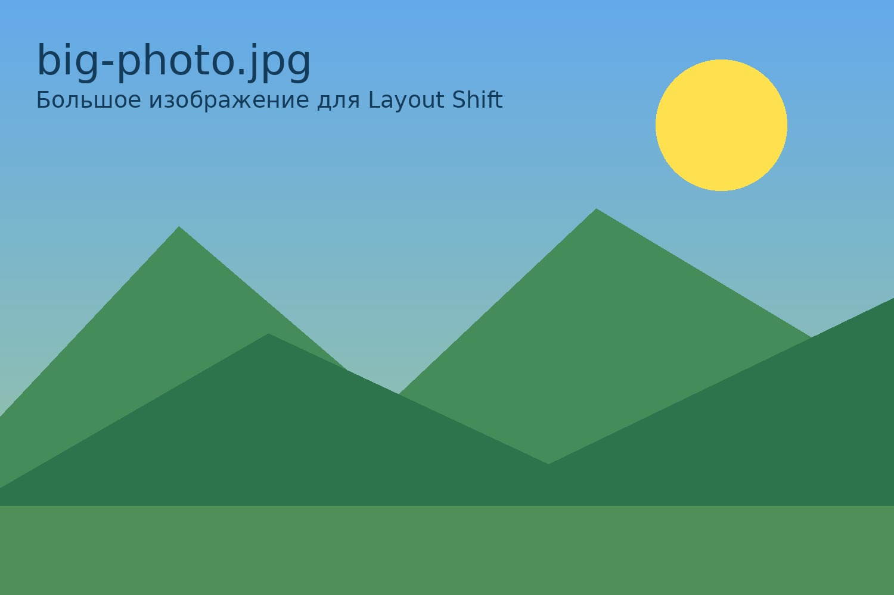

Это первый абзац текста перед изображением. Он нужен для того, чтобы было видно, как страница ведет себя при загрузке картинки. Если размеры картинки не указаны, страница может прыгать.
Это второй абзац текста. Браузер сначала не знает, сколько места займет изображение. Поэтому после загрузки картинки текст ниже может сдвинуться вниз.
Это третий абзац текста. Такой эффект называется Layout Shift. Он мешает пользователю спокойно читать страницу.
Это четвертый абзац текста. Особенно хорошо этот эффект заметен при медленном интернете. Например, если включить режим Slow 3G в инструментах разработчика.
Это пятый абзац текста. Сейчас ниже будет изображение без указанных размеров.

Текст после картинки может резко сдвинуться вниз, когда изображение загрузится. Это неудобно для пользователя.
Если пользователь уже начал читать текст, страница может неожиданно поменять положение. Поэтому лучше заранее указывать размеры изображения.
Без width и height браузер не может заранее оставить место под картинку. Из-за этого макет становится менее стабильным.
Такой вариант считается хуже для качества страницы. В реальной верстке его лучше не использовать.
Этот пример показывает, почему размеры изображений важны.
Это первый абзац текста перед изображением. В этой версии у картинки указаны ширина и высота. Поэтому браузер заранее понимает, сколько места нужно оставить.
Это второй абзац текста. Даже если картинка загружается медленно, место для нее уже зарезервировано на странице.
Это третий абзац текста. Благодаря этому текст ниже не должен резко прыгать вниз. Страница выглядит стабильнее.
Это четвертый абзац текста. Такой способ лучше подходит для нормальной HTML-страницы. Пользователю удобнее читать содержимое.
Это пятый абзац текста. Сейчас ниже будет та же картинка, но уже с атрибутами width и height.
Текст после картинки остается на своем месте, потому что браузер заранее выделил место под изображение.
Такой вариант помогает избежать сильного смещения элементов страницы. Это делает сайт удобнее.
Атрибуты width и height помогают браузеру правильно построить макет еще до загрузки картинки.
В реальных сайтах это важно, потому что пользователи могут открывать страницы с разной скоростью интернета.
Этот пример показывает, что указывать размеры изображения полезно.
Работу выполнила Ксю Ксюша.